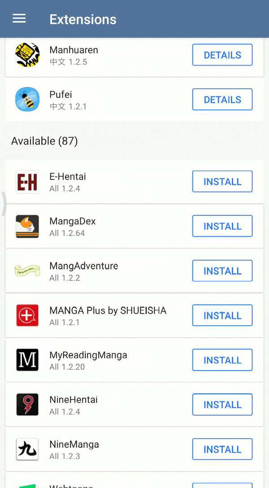

Getting started with Tachiyomi
Tachiyomi is a free and open source manga reader for Android.
Installation
1 Get the latest stable release from GitHub.
tachiyomi-vX.Y.Z.apk
2 Install the .apk file you just downloaded from GitHub.

Extensions
3 Now that Tachiyomi is installed, open the app and navigate to the Extensions tab.

4 In this guide we will use MangaDex, our most popular extension. Press the Install button and it will bring up the extension installer. If your phone does not allow third-party installations, follow this guide.
If you successfully installed MangaDex then it should now show up in the Catalogues tab.
The items appearing here are called Sources, an extension can contain multiple sources.

Library
5 To find manga, you can now either use the Latest button on your source, or you can use Browse and search for it.
6 Now that you've found manga that you want to add to your library, click on it and then press the blue bookmark button.
It should now appear in your My library tab, ready to be read!

Q What are some good extensions?
A The most popular is MangaDex, MangaRock and MangaSee, these are large sites which host content from scanlators, there's also extensions like Genkan, Madara, FoolSlide and ComiCake which contains sources which hosts directly from the scanlators own websites.
Q How do I allow third-party installations on my phone?
A When installing your first extension and are promted that your phone isn't allowed to install unknown apps from that source, simply press the Settings button and then allow it.
Two example videos, left one is for newer Androids.
 
Q I'm not getting any results when browsing MangaDex
A Go to Browse for MangaDex under Catalogues, press the three-dot button in the top-right corner and press the Open in web view button. Now go to the hamburger menu, press the Manga drop-down and then choose either Sign up or Log in.
Q I'm getting "No results found" when trying to browse MangaDex after logging in
A Go to Browse for MangaDex under Catalogues, press the three-dot button in the top-right corner and press the Open in web view button. Now go to the hamburger menu, press the Manga drop-down and then Titles. The last step is to go to the icon in the upper right that looks like four-boxes and select Detailed